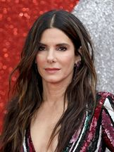
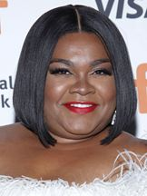
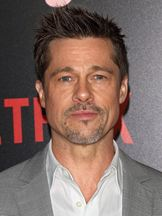
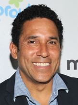
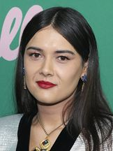
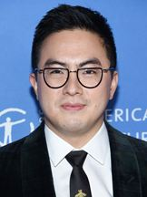

Cidade Perdida
Saíba mais sobre Cidade Perdida
Sandra Bullock Personagem : Loretta Sage

Channing Tatum Personagem : Alan/Dash
Daniel Radcliffe Personagem : Abigael Fairfax
Da’vine Joy Randolph Personagem : Beth Hatten

Brad Pitt Personagem : Jack Trainer

Oscar Núñez Personagem : Oscar

Patti Harrison Personagem : Allison

Bowen Yang Personagem :Ray

Rafi:Héctor Aníbal
Officer Sawyer:Adam Nee
Officer Gomez:Raymond Lee
Compositor :Pınar Toprak
Produtor:Sandra Bullock
Produtor Executivo:Dana Fox
Produtor:Liza Chasin
Produtor Executivo:Margaret Chernin
Montador chefe:Craig Alpert
Diretor de fotografia:Jonathan Sela
InternationalDistributionExports :Paramount Pictures
Production:Paramount Pictures
Production:Exhibit A Pictures
Distribution:PARAMOUNT PICTURES